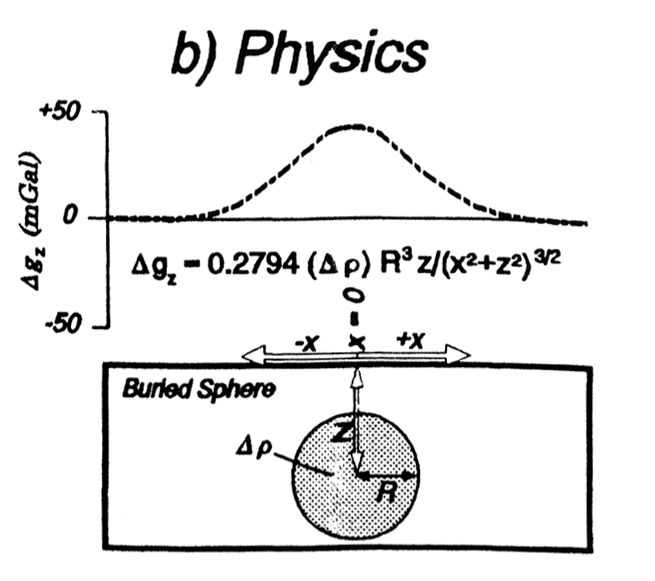
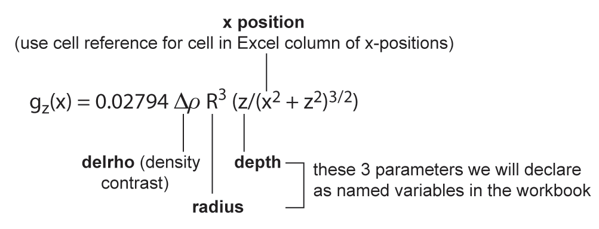
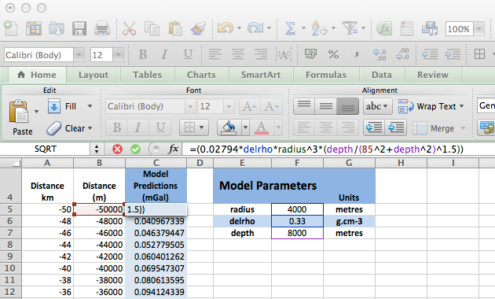
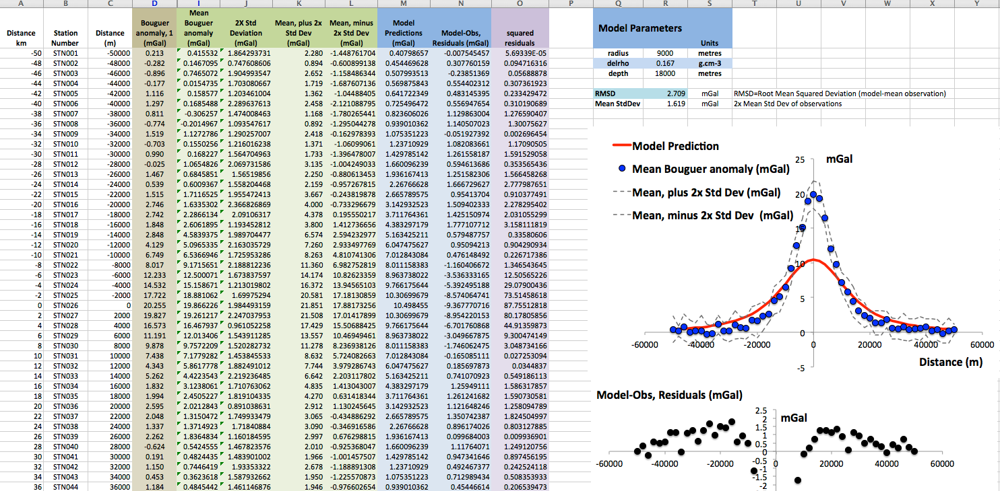

Lab 2
Gravity Modelling: Forward Modelling of Synthetic Data

The objective of this laboratory session is to introduce the concept of forward modelling as a method of interpreting geophysical observations. This will involve implementing a quantitative mathematical model that predicts the gravity effect arising from a spherical object buried at some depth beneath the surface.
We will use Excel to implement the model using formulae and also to display the observed data (in this case synthetic) and the model predictions simultaneously. You might benefit from reviewing some of the online training video tutorials.
Task 1
Implement a model which predicts the Bouguer gravity anomaly measured at the surface along a transect across the centre of a buried spherical object (please review pages 244-248 in Chapter 8 of Lillie for additional details).
The key to this task is understanding how to enter a formula and to define named variables to refer to the fixed model parameters. If you are unfamiliar with how to do this in Excel, this is a very helpful online tutorial: Defining Variable Names. The YouTube video below also demonstrates how to do this for this laboratory task.
In the equation, or formula, we are using (see below) there are three "fixed" parameters (radius, R, depth, z; and density contrast, Δρ) and one variable parameter (distance, x). The three parameters that define the spherical object are "fixed" in the sense that for each model we will choose a fixed radius, a fixed depth and a fixed density contrast value and then calculate gz for a range of x positions along the transect. So, for each instance of the model the "fixed" parameters do not change and the variable parameter does.

The formula allows us to calculate the gravity effect of the chosen object (i.e. the Bouguer anomaly arising because of this object), as measured at the surface, at any specified distance, x. So, we need to calculate this value many times, once for each new x position along the transect. The easiest way to set this up in Excel is to enter a range of x-positions, spaced regularly along the transect, into a single column within Excel and then use the formula to calculate gz for each x-position and store this value in an adjacent column.
The YouTube video below demonstrates how to set up the formula and define variable names in Excel for this laboratory sesssion.
So, to predict the Bouguer gravity anomaly along a transect measured along the surface that crosses over the exact centre of the sphere we simply need to use the formula to calculate the gz value at a set of points or distances (x) along the transect. This is why the distance parameter is variable, we want this parameter to vary while keeping the other three parameters fixed.

Task 2
To evaluate how the predicted gravity anomaly changes when each of the three "fixed" model parameters is adjusted, it is useful to examine a series of models where we change only one model parmeter at a time. Use your model to plot graphs to illustrate the predicted Bouguer gravity anomaly profile along the transect for the following conditions (see notes) and make notes about the relative amplitude and shape of the anomaly for and between each example.
The objective of this task is simply to test your model and examine how it behaves when you change the values for radius, density or depth. Rather than doing this in a random fashion, or just mechanically going through the list of settings suggested in the lab notes, you will get the most out of this task by looking and thinking about the formula along with the changes. You should be able to predict how the model will change BEFORE you even change the parameters.
If you are unfamiliar with plotting and formatting graphs using Excel a useful online tutorial and reference is: Create a chart from start to finish.
Task 3
Down load the spherical model synthetic data from the Moodle site. The data are provided as a simple ascii text file (no formatting) and as an Excel file. The simplest way to open the ascii text file is to click the link, then select and copy the data (make sure you select ALL the columns and headings) and then paste this into an empty Excel workbook page (use Paste Special - >Ascii text ). Or simply download the Excel format file and open this.
Use the forward model you developed for Task 2 above to estimate the depth and radius of a spherical object that is consistent with the observed gravity data (initially, assume a density contrast of 0.33 g.cm^3).
The aim of this task is to USE your model to interpret a set of "observed" data. In order to do this you will have to plot the observed data on the same graph as your model, so that you can visually assess how well your model fits the observations as you adjust the parameters.
However, in addition to visually assessing the fit of the model to the data, we are also going to calculate the "goodness of fit" using standard statistics.
In order to assist your visual assessment of the fit it is useful to plot lines indicating the scale of the uncertainty on your observations, i.e. the standard deviation. This can be done easily by adding two additional columns to your spreadsheet, one where you add 2x the standard deviation to the mean value for a site, and another where you subtract 2x the standard deviation from the mean value. We use twice the standard deviation because the probability of the true value falling in the range between +/- 2x standard deviations of the mean is 95%.
We also need to plot a suitable graph to enable us to inspect the residuals in order to evaluate how well our model is working. In the example layout shown below I have plotted the residuals on a separate x-y scatter graph placed below the model so it can be easily seen along with the predicted gz plot.
Click the image to see an enlarged view.
